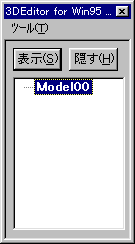
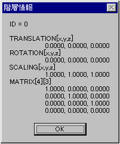

★Graphic Tools Guide
★3D Editorユーザーズマニュアル
★Graphic Tools Guide
★3D Editorユーザーズマニュアル
▲
戻る｜
■
3D Editorユーザーズマニュアル/ウィンドウ
■階層構造ウインドウ
- メインウインドウで「表示」→「階層構造」を 選択した際に表示されるウインドウです。現在選択されている階層を構成するモデルの表示／非表示の制御を行います。また、モデル名の変更等の編集もここで行います。

- ◆表示
- 現在選択されている階層を構成するモデルを表示します。階層ツリーが折りたたまれている場合は、それより下位の全てのモデルに対して適用されます。
- ◆隠す
- 現在選択されている階層を構成するモデルを非表示にします。階層ツリーが折りたたまれている場合は、それより下位の全てのモデルに対して適用されます。
- ◆名称変更
- 現在選択されている階層を構成するモデルの名称を変更します。MDL形式で保存する場合、ここで指定された名称が変数名となるので注意が必要です。
- ◆階層情報
- 現在選択されている階層のマトリクス情報を表示します。

- ◆閉じる
- 階層構造ウィンドウを閉じます。
▲
戻る｜
■
★Graphic Tools Guide
★3D Editorユーザーズマニュアル
Copyright SEGA ENTERPRISES, LTD,. 1997